Grade 9
900 no-prep resources for grade 9 with answer keys: reading comprehension passages, reading trails, and math centers.
900 resources
Subject

World War I Reading Comprehension Passages | History Scavenger Hunt 8-9

Oil Refinery Reading Comprehension Passages | Chemistry Scavenger Hunt 8-9

Journey Through the Sun Reading Comprehension | Science Scavenger Hunt 8-9

High school – Italian Reading: Cloze Text, Listening Task & Word Search (Scheda)
Hernán Cortés – Italian Reading: Cloze, Listening & Word Search
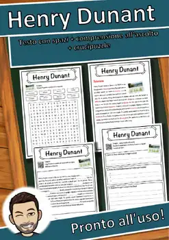
Henry Dunant – Italian Reading: Cloze, Listening & Word Search
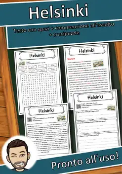
Helsinki – Italian Reading: Cloze Text, Listening Task & Word Search (Scheda)
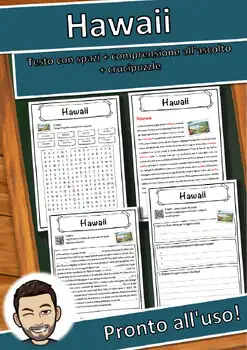
Hawaii – Italian Reading: Cloze Text, Listening Task & Word Search (Scheda)

Hassio – Italian Reading: Cloze Text, Listening Task & Word Search (Scheda)

Hans Christian Andersen – Italian Reading: Cloze, Listening & Word Search
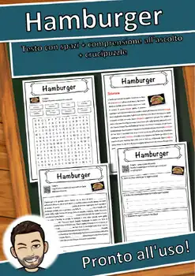
Hamburger – Italian Reading: Cloze Text, Listening Task & Word Search (Scheda)
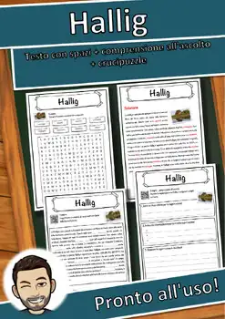
Hallig – Italian Reading: Cloze Text, Listening Task & Word Search (Scheda)
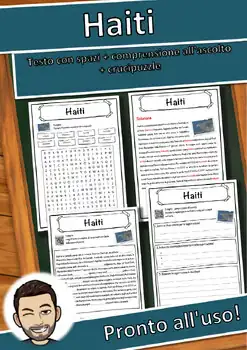
Haiti – Italian Reading: Cloze Text, Listening Task & Word Search (Scheda)

Hacker – Italian Reading: Cloze Text, Listening Task & Word Search (Scheda)

HTML – Italian Reading: Cloze Text, Listening Task & Word Search (Scheda)
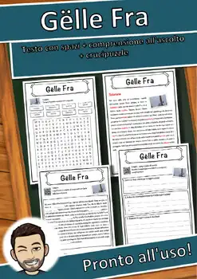
Gëlle Fra – Italian Reading: Cloze Text, Listening Task & Word Search (Scheda)

Gustav Stresemann – Italian Reading: Cloze, Listening & Word Search
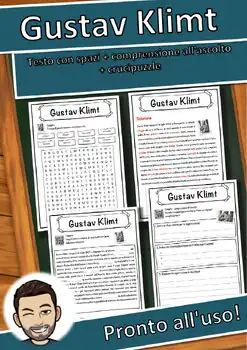
Gustav Klimt – Italian Reading: Cloze, Listening & Word Search
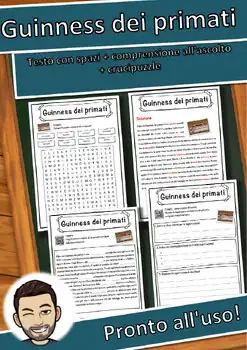
Guinness dei primati – Italian Reading: Cloze, Listening & Word Search
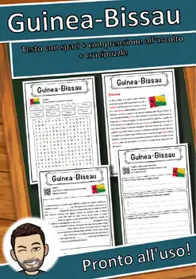
Guinea-Bissau – Italian Reading: Cloze, Listening & Word Search
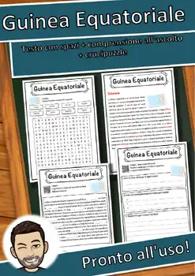
Guinea Equatoriale – Italian Reading: Cloze, Listening & Word Search
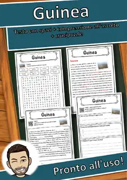
Guinea – Italian Reading: Cloze Text, Listening Task & Word Search (Scheda)
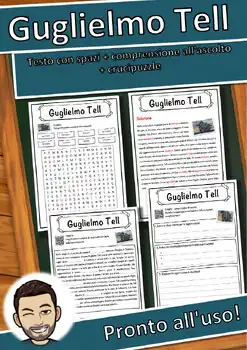
Guglielmo Tell – Italian Reading: Cloze, Listening & Word Search
Guglielmo I d'Inghilterra – Italian Reading: Cloze, Listening & Word Search

Guerra fredda – Italian Reading: Cloze, Listening & Word Search
Bianco e nero – Italian Reading: Cloze, Listening & Word Search

Guerra dei trent'anni – Italian Reading: Cloze, Listening & Word Search

Guerra dei sette anni – Italian Reading: Cloze, Listening & Word Search

Guerra civile siriana – Italian Reading: Cloze, Listening & Word Search

Guerra civile inglese – Italian Reading: Cloze, Listening & Word Search
Guerra – Italian Reading: Cloze Text, Listening Task & Word Search (Scheda)
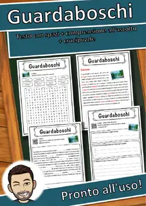
Guardaboschi – Italian Reading: Cloze, Listening & Word Search
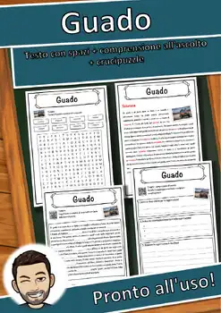
Guado – Italian Reading: Cloze Text, Listening Task & Word Search (Scheda)

Grus grus – Italian Reading: Cloze Text, Listening Task & Word Search (Scheda)
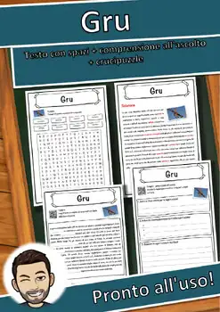
Gru – Italian Reading: Cloze Text, Listening Task & Word Search (Scheda)
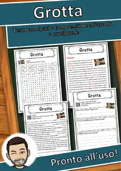
Grotta – Italian Reading: Cloze Text, Listening Task & Word Search (Scheda)
Groenlandia – Italian Reading: Cloze Text, Listening Task & Word Search (Scheda)
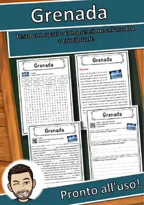
Grenada – Italian Reading: Cloze Text, Listening Task & Word Search (Scheda)
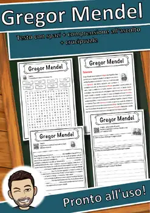
Gregor Mendel – Italian Reading: Cloze, Listening & Word Search
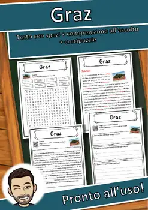
Graz – Italian Reading: Cloze Text, Listening Task & Word Search (Scheda)
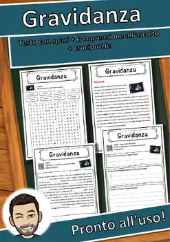
Gravidanza – Italian Reading: Cloze Text, Listening Task & Word Search (Scheda)
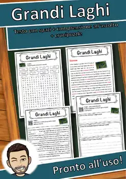
Grandi Laghi – Italian Reading: Cloze, Listening & Word Search
Grande depressione – Italian Reading: Cloze, Listening & Word Search
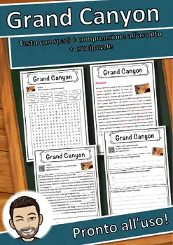
Grand Canyon – Italian Reading: Cloze, Listening & Word Search
Grammatica – Italian Reading: Cloze Text, Listening Task & Word Search (Scheda)
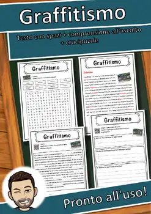
Graffitismo – Italian Reading: Cloze Text, Listening Task & Word Search (Scheda)

Grado Celsius – Italian Reading: Cloze, Listening & Word Search

Governo – Italian Reading: Cloze Text, Listening Task & Word Search (Scheda)
No resources found – try a different search term or filter.